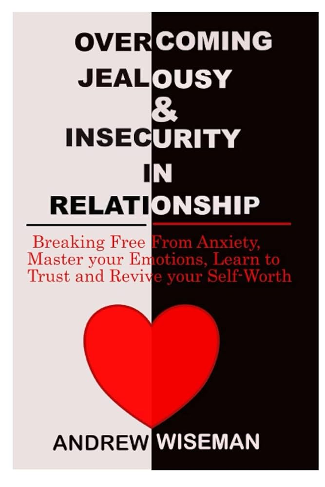

Library Reader
A short story to calm comparison and protect your peace.

"Burnout by Amelia Nagoski"
Amelia Nagoski was working as a choral conductor in a demanding job she loved. She cared deeply about her students, pushed herself to meet expectations, and always tried to do everything perfectly. But the stress kept piling up: long hours, emotional pressure, constant performance demands, and her own high standards.
At first she did not notice how exhausted she had become. She assumed stress was normal and something she simply had to push through. But her body disagreed. One day during rehearsal, Amelia suddenly felt a stabbing pain in her side. She thought it was just stress or fatigue, but the pain grew worse until she could barely stand. She was rushed to the hospital, where doctors told her the truth.
Her stress had become so extreme that it was physically destroying her body. She was not suffering from a simple illness; she was suffering from full burnout, so severe that her immune system and nervous system were shutting down. Amelia was shocked. She had spent her life focusing on work and others' needs, believing that her own stress did not matter. But the burnout had reached a crisis point.
Doctors warned her: if she did not change how she handled stress, it could happen again or worse. During recovery, Amelia learned something surprising: her problem was not just stressful events; it was that she never completed the stress cycle.
She dealt with her responsibilities, but never gave her body a chance to release the stress. She learned new ways to heal: physical movement, deep breathing, rest, setting boundaries, and accepting her limits without guilt. Slowly, her body and mind began to recover.
Emily and Amelia then worked together to write Burnout, combining science and Amelia's experience to help others avoid the suffering she went through.
By the end of the story, Amelia learns: you cannot think your way out of stress; you must let your body know you are safe. Burnout is not weakness; it is a signal that you need care, rest, and support.
You have finished reading the book!
Opening next page...